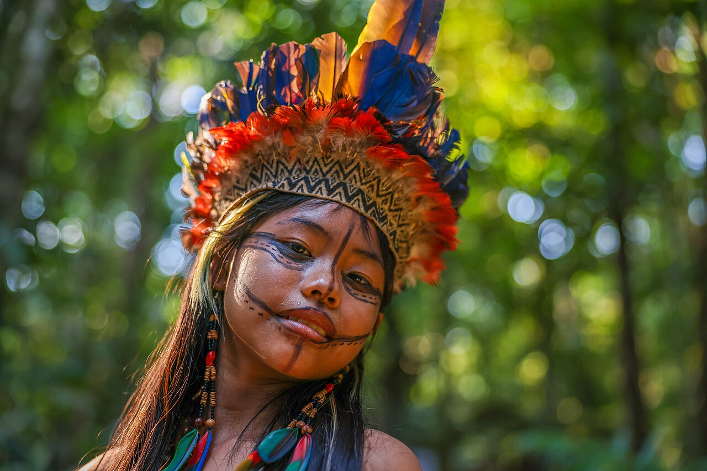
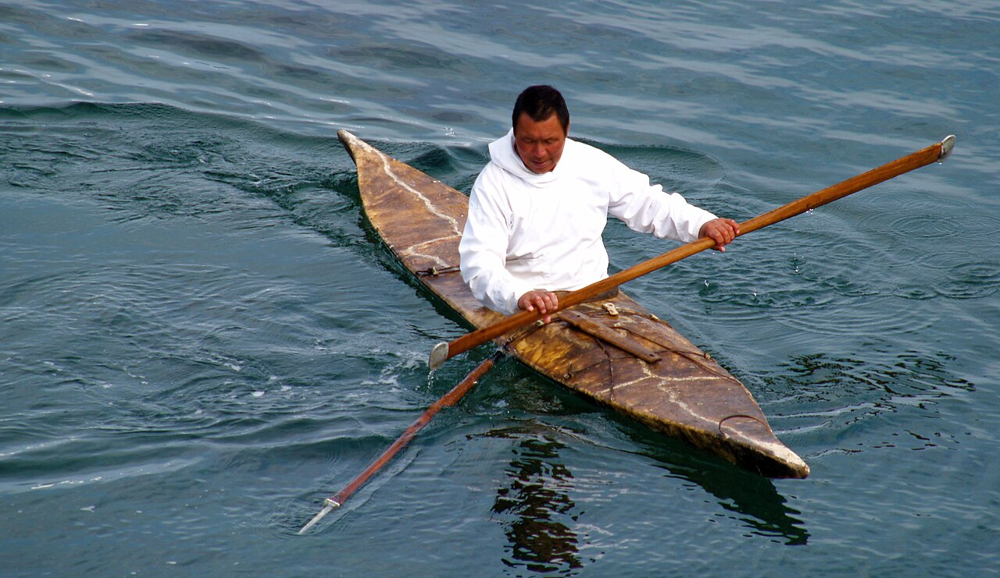
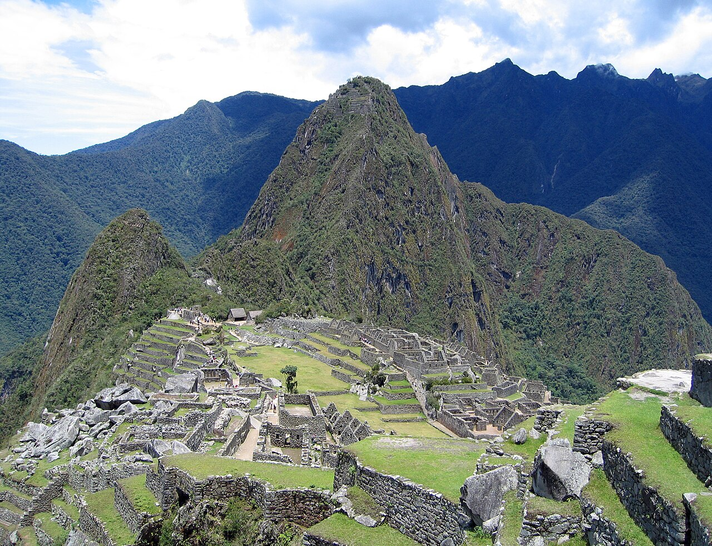
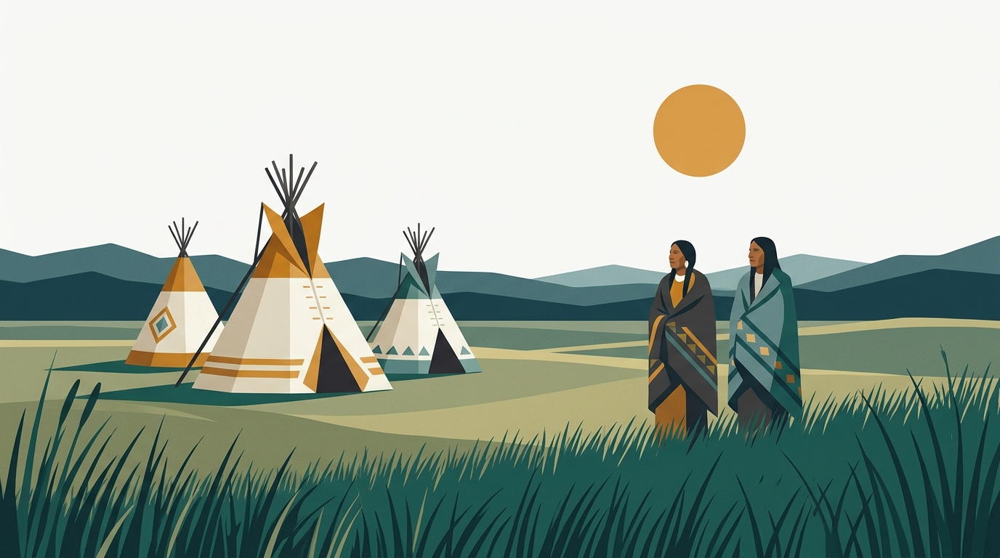
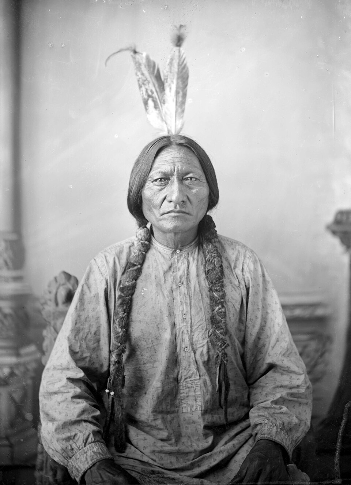
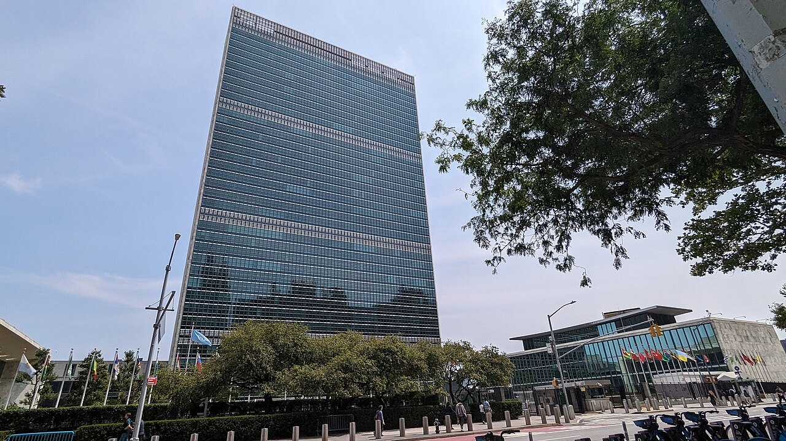

Urfolk
Hvem er urfolk, og hva kjennetegner måten urfolk lever og bor på? I dette kapittelet ser vi på hvordan kolonisering, fornorsking og moderne ressurskonflikter preger urfolks livsvilkår og rettigheter i dag.

s tradisjonelle kultur innebærer et liv i og med naturen med mindre inngrep og endring enn det som kjennetegner de dominerende kulturene i verden. Gjennom historien har urfolk blitt utsatt for og forsøk på utslettelse, med alt fra massedrap og fordrivelser til å bli hindret i næringsutøvelse og forbud mot å bruke eget språk. I dag står mange urfolk i nye interessekonflikter om landområder, naturressurser og rettigheter.
Du skal lære om
- • Urfolk, og bosettingsområder
- • Kolonisering, og
- • Urfolks rettigheter og
- • Moderne areal- og ressurskonflikter (Fosen-saken og Nord-Amerika)
Tenk over
- Hvilke urfolksgrupper kjenner du til i Norge og resten av verden?
- Hva er forskjellen på et urfolk og en nasjonal minoritet?
- Hvordan kan behovet for fornybar energi komme i konflikt med urfolks rettigheter?
Hvem er urfolk?
Kort fortalt
betegner etniske grupper som har bodd i et bestemt område før statene som dekker området i dag, ble etablert. Mange urfolk har hatt en levemåte preget av mindre omfattende inngrep i naturen enn andre etniske grupper i samme område.
Forstavelsen ur i forteller oss at det handler om en gruppe mennesker som har bodd i et bestemt område lenge, siden før statene som dekker området i dag, ble etablert. Globalt representerer urfolk rundt 5 000 forskjellige kulturer og snakker et overveldende flertall av verdens ca. 7 000 språk, selv om de bare utgjør rundt 6 prosent av jordens befolkning. Samtidig er urfolk underrepresentert i maktposisjoner og overrepresentert blant mennesker som lever i ekstrem fattigdom.
Det finnes ingen én enkelt juridisk definisjon globalt, men sentrale kjennetegn er historisk tilknytning før statsdannelse, tap av land gjennom kolonisering, egenartet kultur og at gruppen selv identifiserer seg som urfolk. Et land kan ha mange urfolk – som navajo og cherokee i USA – mens Norge har ett urfolk: samene.
Det er viktig å skille mellom et og en . En minoritet er en folkegruppe som er i mindretall i en stat og skiller seg fra flertallsbefolkningen gjennom kultur, språk eller etnisk bakgrunn. I Norge har kvener/norskfinner, skogfinner, jøder, rom og romanifolket/tatere status som nasjonale minoriteter. Samene regnes ikke som nasjonal minoritet fordi de har status som urfolk etter ILO-konvensjon 169, noe som gir sterkere rettigheter til land, vann og selvbestemmelse.
Trenger ikke ha vært der først

Mange tror at «urfolk» betyr de aller første menneskene som noen gang bodde i et område. I folkeretten handler det derimot om å ha bodd der før dagens stater og grenser ble etablert – ikke om forhistorisk innvandring. På Grønland daterer de første bosettingene seg til 2500 fvt. Da inuittene slo seg ned i nord på 1000-tallet, var det etter at vikingene hadde etablert bosettinger på sørvestkysten, og inuittene flyttet inn i sørvest først etter at de norrøne bosettingene døde ut på 1400-tallet. Like fullt er inuittene Grønlands urfolk.
Naturbruk: tradisjon og moderne press
Tradisjonelt har urfolk hatt mindre omfattende inngrep i naturen enn majoritetsbefolkningen, og enkelte små grupper i Amazonas lever fortsatt av jakt og sanking. Samtidig er det viktig å nyansere bildet: I dag tar flere urfolk i bruk moderne teknologi som kan belaste naturen ganske hardt – for eksempel når store reinflokker i moderne samisk reindrift fører til nedbeiting av sårbare beiteområder, eller når motoriserte kjøretøy som snøscooter og ATV setter dype spor i fjellet (les mer i kapittel 2 →).
⚡ Super-sammendrag · Hvem er urfolk?
Urfolk har bodd i et område før dagens stater ble etablert (man trenger ikke ha vært aller først). De skiller seg fra andre minoriteter ved denne historiske landtilknytningen, og selv om tradisjonell naturbruk er skånsom, kan moderne urfolksnæringer også belaste naturen hardt.
Kolonisering
Kort fortalt
Urfolk har over hele verden blitt utsatt for kolonisering, drap og fordriving. Grov urett, fortsatte fordommer og rasisme er blant årsakene til at mange urfolk lever under vanskelige forhold i dag.
Det at en stat dominert av andre folkegrupper enn dem som opprinnelig har bodd der, tar over et landområde og begynner å utnytte ressursene i området, kalles .
Å ha blitt utsatt for kolonisering er en felles erfaring for folkegrupper som omtales som urfolk i dag. Derfor er det ikke bare jegere og sankere som regnes som urfolk, men også etniske grupper med lang tradisjon for jordbruk, fast bosetting og egne stater før koloniseringen. Det gjelder blant annet verdens folkerikeste urfolk, quechuafolket i Andesfjellene, som samlet utgjør mer enn ti millioner innbyggere. Før området ble kolonisert av Spania på 1500-tallet, hadde de etablert det mektige Inkariket som strakte seg fra dagens Colombia til Chile.

Drap, fordriving og segregering
Hispaniola (1500-tallet): Få tiår etter at spanjolene etablerte sin første koloni i Amerika på øya Hispaniola (i dag Den dominikanske republikk og Haiti), var størstedelen av urbefolkningen utryddet – både på grunn av manglende immunitet mot europeiske sykdommer og brutal utnyttelse som slaver på sukkerplantasjene.
Australia (1700–1930): Etter at britiske settlere ankom på slutten av 1700-tallet, ble det helt fram til 1930 begått utallige massedrap på aboriginere. Konflikter om beiteområder og husdyr utviklet seg til utryddelseskampanjer som gjorde det mulig for europeiske nybyggere å overta landet.
USA (1830–1887): Med Indian Removal Act (1830) ble rundt 60 000 mennesker fra choktaw-, creek-, chikasaw-, cherokee- og seminolefolkene tvangsflyttet vest for Mississippi til «Indian Territory» (dagens Oklahoma), og tusenvis døde underveis. Da nybyggerne ønsket også denne jorda, ble løftene brutt med Dawes Act i 1887. Urfolkene ble henvist til små, ressursfattige reservater – et tydelig eksempel på geografisk og rettslig , der folkegrupper holdes fysisk og sosialt atskilt fra majoritetssamfunnet.
⚡ Super-sammendrag · Kolonisering
Kolonisering rammet både jegere/sankere og store jordbrukssamfunn som Inkariket. På Hispaniola, i Australia og i USA førte det til massedrap, tvangsflytting og segregering i små, ressursfattige reservater.
Assimilering, motstand og fornorsking
Kort fortalt
Mange stater forsøkte å tvinge urfolk til å gi opp egen kultur og språk gjennom . Motstanden mot denne politikken – fra Wounded Knee til organiseringen i Norden – har formet dagens globale urfolksbevegelse.
Med Dawes Act i USA ble barn fra urfolksfamilier plassert på internatskoler for å lære engelsk og bli som europeiskættede amerikanere. Tilsvarende politikk for har blitt ført overfor urfolk i de fleste land, også mot samene i Norge. Assimilering innebærer at alle kjennetegn en etnisk gruppe har, forsvinner, og at etterkommerne ser på seg selv som tilhørende en annen etnisk gruppe (majoriteten).
I samfunnsgeografien skiller vi ofte mellom tre måter stater møter minoriteter og urfolk på: (at gruppen skal miste sitt særpreg og bli lik majoriteten), (at gruppene holdes atskilt i samfunnet) og (at gruppen deltar som likeverdige borgere i storsamfunnet samtidig som den beholder og utvikler egen kultur og språk).
Motstand og politisk bevisstgjøring


Politikken for kolonisering og assimilering ble møtt med motstand helt fra starten. Blant lakotafolket i Sør-Dakota vokste den religiøse bevegelsen Ghost Dance («åndedans») fram etter Dawes Act. I 1890 ble lederen Sitting Bull skutt og drept under et forsøk på arrestasjon, og 29. desember 1890 ble nærmere 300 ubevæpnede urfolk – mange av dem kvinner og barn – drept av amerikanske soldater i massakren ved Wounded Knee.
På 1960-tallet ble Wounded Knee likevel en inspirasjonskilde for en ny politisk bevegelse blant urfolk, inspirert av avkoloniseringen i Asia og Afrika og borgerrettighetsbevegelsen i USA. Tanken var at urfolk må organisere seg for å kjempe for retten til land og vann, og fremheve egne kulturelle tradisjoner med stolthet. I 1968 organiserte norske samer seg i Norske Samers Riksforbund (NSR) og ble tidlig en del av dette internasjonale urfolkssamarbeidet.
Sannhets- og forsoningskommisjonen og oppgjøret med fornorskningspolitikken

Fra midten av 1800-tallet og langt inn i etterkrigstiden førte den norske staten en systematisk . Politikken var spesielt hard og rasistisk de første tiårene av 1900-tallet, da norsk nasjonalisme sto sterkt rundt unionsoppløsningen med Sverige i 1905. Målet var aktiv – gjennom internatskoler, forbud mot samisk og kvensk språk i undervisningen, og krav om norsk språk for å få kjøpe statlig jord i Finnmark (se mer om grensestengingen i 1852 og Jordloven i kapittel 2 →). Sannhets- og forsoningskommisjonen har understreket at fornorskingen ikke er et avsluttet kapittel, fordi holdninger og samfunnsstrukturer fortsatt henger igjen. Politikken rammet både samer (urfolk) og de nasjonale kvener/norskfinner og skogfinner.
Kommisjonens rapport (1. juni 2023)
Etter fem års arbeid ledet av Dagfinn Høybråten overleverte Sannhets- og forsoningskommisjonen sin rapport til Stortinget. Over 760 personlige historier dokumenterte hvordan fornorskingen fortsatt fører til språktap, skam, helseutfordringer og tap av rettigheter og kultur på tvers av generasjoner.
Stortingets behandling (november 2024)
Den 12. november 2024 behandlet Stortinget rapporten (Innst. 30 S). Stortinget ba formelt om unnskyldning for den uretten staten begikk gjennom fornorskningspolitikken mot samer, kvener/norskfinner og skogfinner, og vedtok 17 tiltak for reell , språkstyrking og kunnskapsløft i samfunnet.
⚡ Super-sammendrag · Assimilering & fornorsking
Assimilering betyr å viske ut minoritetens kultur og språk (f.eks. internatskoler og fornorskningspolitikk). Motstand fra Wounded Knee til NSR (1968) skapte en global rettighetskamp, og i 2023–2024 fulgte Norge opp med Sannhets- og forsoningskommisjonen og Stortingets unnskyldning.
Urfolksrettigheter og ILO-konvensjon 169

Kort fortalt
I 1989 ble det forhandlet fram en internasjonal avtale som skal sikre urfolks rettigheter. Det har flere steder oppstått konflikter mellom hensynet til nye arbeidsplasser og velstand og hensynet til urfolks levemåte. Global oppvarming utgjør også en alvorlig trussel mot urfolks livsgrunnlag.
ILO, Den internasjonale arbeidsorganisasjonen, er en underorganisasjon av FN som arbeider for å hindre utnyttelse og skape bedre vilkår for arbeidstakere verden over. Etter andre verdenskrig vokste forståelsen for at urfolk i særlig grad har vært utsatt for økonomisk utnyttelse og undertrykkelse, og at deres spesielle levemåte krever eget vern.
Derfor ble om urfolk og stammefolk i selvstendige stater vedtatt i 1989. En er en folkerettslig avtale som er rettslig forpliktende for statene som ratifiserer den. Norge var det første landet som ratifiserte avtalen i 1990, og til sammen har 23 land ratifisert den (se hvordan Norge fulgte opp med Finnmarksloven i kapittel 2 →).
Målet med konvensjonen er å sikre at urfolk får opprettholde livsgrunnlaget knyttet til tradisjonelle næringer og ta vare på egne kulturelle tradisjoner, samt beskytte urfolksgrupper mot tvangsmessig .
Hva sier ILO-konvensjon 169?
Klikk på fanene for å se sentrale rettigheter i konvensjonen:
Selv om det er lett å anerkjenne prinsippet om at urfolk har rett til å bevare råderett over landområdene de er avhengige av, har det vist seg vanskelig i praksis når prosjekter kan skape velstand og arbeidsplasser. Fordi urfolks tradisjonelle levemåte er knyttet til skånsom utnyttelse av relativt uberørt natur, står urfolksforkjempere og miljø- og naturvernere ofte på samme side.
Global oppvarming er dessuten en direkte trussel mot urfolks livsgrunnlag: for inuitter som er avhengige av iskanten til fangst av sel og hval og har infrastruktur på tiningstruet permafrost; for urfolk i Australia og tropiske strøk som rammes av hyppigere tørke og flom; og for samene gjennom usikre konsekvenser for reindrift og kyst- og elvefiske.
⚡ Super-sammendrag · Urfolksrettigheter (ILO 169)
ILO-konvensjon 169 (1989, ratifisert av Norge i 1990) sikrer urfolk rett til språk, utdanning, tradisjonelle næringer og råderett over landområder, og verner mot tvungen assimilering – samtidig som klimaendringer truer livsgrunnlaget deres.
Nasjoner i nasjoner
Kort fortalt
Ordet nasjon brukes ofte når vi snakker om en stat. Begrepet kan også betegne urfolk som lever innenfor en stats grenser, men som har en opplevelse av å være et politisk fellesskap.
Diskusjonen om urfolks rettigheter har ført til at flere urfolk i dag definerer seg selv som . Mens begrepet beskriver observerbare kulturelle fellestrekk, vektlegger begrepene folk og nasjon at medlemmene selv opplever seg som et kulturelt og politisk fellesskap med rett til selvstyre og egen identitet.
Når vi snakker om «det norske folket», inkluderer vi alle som bor fast i Norge – uavhengig av om de er etnisk norske, samer eller har annen etnisk bakgrunn. Samtidig brukes nasjonsbegrepet om urfolk som lever innenfor eller på tvers av statsgrenser (som Sápmi i Norge, Sverige, Finland og Russland). Dette trenger ikke å stå i motsetning til å være en del av statens nasjonsfellesskap: Ved å definere seg som en nasjon i nasjonen kan det bli lettere å fremme egne interesser og oppnå reell deltakelse og i staten.
⚡ Super-sammendrag · Nasjoner i nasjoner
Flere urfolk definerer seg som «nasjoner i nasjonen» – et eget kulturelt og politisk fellesskap med rett til selvstyre innenfor staten, noe som styrker deres mulighet til reell integrering.
Areal- og ressurskonflikter
Fosen-saken: Når grønn omstilling møter urfolks rettigheter

Fosen-dommen er det tydeligste norske eksempelet på interessekonflikten mellom storsamfunnets arealbehov for fornybar energi og urfolks rettigheter til kulturutøvelse. På Fosenhalvøya i Trøndelag ble Europas største landbaserte vindkraftanlegg bygget ut i viktige vinterbeiteområder for sørsamisk reindrift.
1. Høyesterettsdommen (2021)
11. oktober 2021 slo Høyesterett i storkammer fast at konsesjonen for vindkraftverkene på Storheia og Roan var ugyldig. Utbyggingen krenket reindriftssamenes rett til kulturutøvelse etter FNs konvensjon om sivile og politiske rettigheter (SP) artikkel 27.
2. Protester og «grønn kolonialisme»
Til tross for dommen fortsatte vindturbinene å produsere strøm. Vinteren 2023 førte dette til store demonstrasjoner i Oslo. Samiske aktivister brukte begrepet «grønn kolonialisme» om hvordan utbygging for det grønne skiftet skjer på bekostning av urfolks arealer.
3. Mekling og avtaler (2023–2024)
I desember 2023 (Sør-Fosen sijte) og mars 2024 (Nord-Fosen siida) ble det inngått meklingsavtaler mellom staten, utbyggerne og reinbeitedistriktene. Avtalene gir økonomisk erstatning og tilleggsareal for vinterbeite, mens vindkraftverkene får stå ut konsesjonsperioden.
Den «umulige» løsningen – når arealkonflikter flytter på seg: Som del av meklingen har staten utredet å skaffe nytt vinterbeite ved å flytte opptil 2 100 Fosen-rein rundt 35 mil sørover til Håmmålsfjellet–Sålekinna i Nord-Østerdalen (Os, Tolga og Engerdal). Dette har utløst sterk motstand fra både bønder, hyttefolk, friluftsliv (bl.a. mot opptil 100 km sperregjerder), naturvernere (hensyn til villrein) og lokale reineiere – som har bedt regjeringen «trykke på stoppknappen».
Kraftmangelen i Trøndelag: Samtidig ville det å rive vindturbinene på Fosen (3,4 TWh) rammet en region som allerede har akutt kraftunderskudd. I Verdal Industripark (over 3 400 ansatte og 15,1 mrd. kr i omsetning) er det allerede tomt for ny kraft i nettet: industribedrifter som Franzefoss Minerals får ikke nok strøm til å gjøre produksjonen utslippsfri, og kommunen må si nei til nye kraftkrevende etableringer (les mer om Norges kraft- og ressursparadoks i kapittel 4 →).
Samfunnsgeografisk kjernekonflikt: Fosen-saken viser dermed et trilemma mellom urfolks rettigheter etter og menneskerettighetene, knapphet på alternative utmarksarealer, og storsamfunnets behov for fornybar kraft til arbeidsplasser og utslippskutt. Se også sammenligningen med Altakraftverket og Tonstad i kapittel 2 →
Oljeutvinning og oljeledninger
Også i Nord-Amerika har ressursutvinning stilt klima-, naturvern- og urfolksinteresser opp mot moderne velstand:
Oljesand i Alberta, Canada
Rundt 23 000 mennesker tilhørende urbefolkningen bor i området der det siden begynnelsen av 2000-tallet er utvunnet olje fra oljeholdig sand. Utgravingene skaper enorme krater, og kjemikalieutslipp forurenser vannet der urfolk fanger fisk og vilt. Samtidig har utvinningen gjort Canada til verdens fjerde største oljeprodusent og skapt arbeidsplasser i et område preget av arbeidsledighet og fattigdom.
Standing Rock & Keystone XL, USA
Utbyggingen av oljerørledningen Dakota Access Pipeline førte til massive protester i 2016–2017, særlig i urfolksreservatet Standing Rock, på grunn av frykt for landskapsendringer og vannforurensning (ledningen har vært i drift siden 2017). Planene om rørledningen Keystone XL gjennom urfolksområder i Sør-Dakota ble derimot møtt med så sterk motstand at utbyggingen ble avbrutt i 2021.
⚡ Super-sammendrag · Areal- og ressurskonflikter
Både fornybar energi (Fosen-vindkraft vs. reindrift, erstatningsbeite i Nord-Østerdalen og kraftmangel i Trøndelag) og fossil energi (oljesand i Canada og Standing Rock i USA) viser at energiutbygging ofte kolliderer med urfolks rettigheter. Se også kapittel 3 om kritiske mineraler og kapittel 4 om gruvedrift og sjødeponi →
Test deg selv & diskuter
Kontrollspørsmål
Velg riktig svar på oppgavene under.
Reflekter og diskuter
- Noen urfolk definerer seg i dag som nasjoner i nasjoner. Hvilke fordeler kan det gi å definere seg på den måten? Kan det være noen ulemper?
- Både i USA, Canada og Australia er omfanget av alkohol- og narkotikamisbruk høyere blant urfolk enn i resten av befolkningen. Hvordan kan dette henge sammen med historisk kolonisering og assimilering, og hvilke konsekvenser har det for nye generasjoner?
- Fosen-dilemmaet: Hvordan bør Norge veie hensynet til grønn omstilling (behovet for mer fornybar kraft) opp mot urfolks rett til kulturutøvelse og reindrift?
Sammendrag & Ordliste
Hovedpunkter fra kapittelet
- ✓Urfolk er etniske grupper som har bodd i et område før dagens stater ble etablert, ofte med en mer skånsom naturbruk.
- ✓Urfolk verden over har vært utsatt for kolonisering, drap, fordriving, segregering (f.eks. reservater) og tvungen assimilering.
- ✓I Norge dokumenterte Sannhets- og forsoningskommisjonen (2023) konsekvensene av fornorskningspolitikken mot samer, kvener/norskfinner og skogfinner, og Stortinget ba formelt om unnskyldning i 2024.
- ✓ILO-konvensjon 169 (1989, ratifisert av Norge i 1990) skal sikre urfolks rettigheter til språk, utdanning, kultur og landområder.
- ✓Fosen-dommen (2021) og oljekonfliktene i Nord-Amerika viser at urfolks landrettigheter fortsatt utfordres av både fossil og fornybar energiutbygging.
Viktige fagbegreper (Ordliste)
Kilder
Internasjonale og faglige kilder
- FN / ILO (1989). Konvensjon nr. 169 om urfolk og stammefolk i selvstendige stater.
- Britannicas redaksjon (2016). «Quechua». Encyclopedia Britannica.
- Allam, L. & Evershed, N. (2019). «The killing times: the massacres of Aboriginal people Australia must confront». The Guardian.
- Siverts, H. (2017). «Indianerterritoriet». Store norske leksikon.
- Larsen, A. K. & Eriksen, T. E. «Hvilke konsekvenser får klimaendringene for reindrifta?». Framsenteret.
- Kusnetz, N. (2021). «The Deep Toll of Tar Sands on Canada’s Indigenous People». Undark.
Oppdaterte norske kilder
- Norges Høyesterett (2021). HR-2021-1975-S (Fosen-dommen).
- Energidepartementet (2023–2024). Meklingsavtaler mellom Sør-Fosen sijte, Nord-Fosen siida og vindkraftaktørene.
- Vold, Øystein Solenes (2026, 18. november). «Akutt kraftmangel i Verdal: – Parken er tom». Trønder-Avisa.
- Sannhets- og forsoningskommisjonen (2023). Sannhet og forsoning – grunnlag for et oppgjør med fornorskingspolitikk og urett mot samer, kvener/norskfinner og skogfinner. Dokument 19 (2022–2023).
- Stortinget (2024). Innst. 30 S (2024–2025) – Kontroll- og konstitusjonskomiteens innstilling og Stortingets vedtak av 12. november 2024.